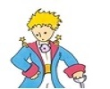
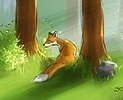
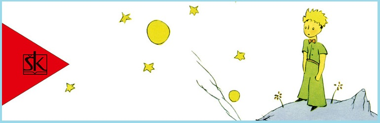
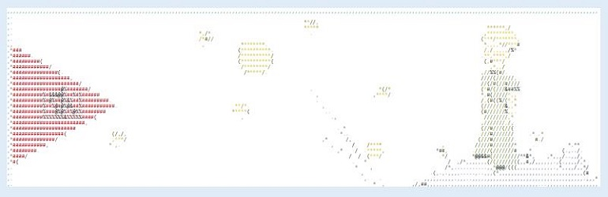
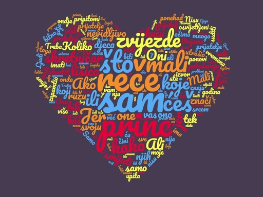
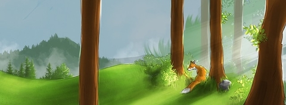

Opis
Mali 🤴 alegorijska je pripovijest o ljubavi, odgovornosti, žrtvi, radosti i životu. Humanost Maloga 🤴 osvojila je čitatelje, djecu i odrasle i ta velika čitateljska ljubav traje već sedamdesetak godina. Mali 🤴 fantastičan je roman: glavni je lik tajanstveni dječak koji živi na nekome drugom planetu, razgovara s biljkama i životinjama te putuje po zamišljenom svemiru. Riječ je o fantastičnom svijetu u kojemu se događaju stvari koje na Zemlji fizički nisu moguće...
Likovi
|  | Mali princ | Geograf | 🦊 | lisica | |
|---|---|---|---|---|---|
| Poslovni čovjek | kralj | zmija | |||
| skretničar | astronom | 🌹 | ruža | ||
| pripovijedač | pijanac | cvijet s tri latice | |||
| trgovac | tašti čovjek | ||||
| nažigač uličnih svjetiljki | |||||
Galerija
Princ
Lisica
Ulomci/Citati
Svi su odrasli najprije bili djeca (No malo njih se toga sjeća.) ….Odrasli nikad ništa ne razumiju, i djeci je naporno što im uvijek moraju nešto tumačiti…. Odrasle osobe vole brojke. Kada im pričate o novome prijatelju, nikada vas ne ispituju o onome bitnome. Nikada vam ne kažu: Kakav je zvuk njegova glasa? Koje igre najviše voli? Skuplja li leptire? Pitaju vas: Koliko ima godina? Koliko ima braće? Koliko je težak? Koliko zarađuje njegov otac? I tek onda misle da ga poznaju. Ako odraslim osobama kažete: Vidio sam lijepu kuću od ružičaste opeke, s geranijima na prozorima i golubovima na krovu..., oni neće moći zamisliti tu kuću. Treba im reći: Vidio sam kuću od sto tisuća franaka. Onda uzviknu: Kako je lijepa! Često sam živio s odraslima. Vidio sam ih izbliza. To baš i nije odveć popravilo moje mišljenje o njima.
Ako čovjek ide ravno naprijed, ne može daleko stići…. Potom protutnji i drugi osvijetljeni vlak u suprotnome smjeru. Već se vraćaju? – upita mali 🤴. To nisu isti – reče skretničar. – To je razmjena. Nisu bili zadovoljni ondje gdje su bili? Čovjek nikad nije zadovoljan ondje gdje jest – reče skretničar. Zatim protutnji i treći osvijetljeni brzi vlak. Oni pokušavaju uhvatiti one prve putnike? – upita mali 🤴. Oni nikoga ne pokušavaju uhvatiti – reče skretničar. – Oni unutra spavaju, ili zijevaju… Samo djeca znaju što traže – reče mali 🤴. – Utroše vrijeme na neku krpenu lutku, pa im postane jako važna, … Djeca imaju sreće – reče skretničar.
Ne – reče mali 🤴. – Tražim prijatelje? Što znači pripitomiti? To je nešto posve zaboravljeno – reče 🦊. To znači "stvoriti veze…" Molim te… pripitomi me!-reče. Volio bih – odgovori mali 🤴 – ali nemam baš mnogo vremena. Moram naći prijatelje i upoznati još mnogo toga. Upoznamo samo ono što pripitomimo – reče 🦊. – Ljudi više nemaju vremena ništa upoznati. Oni kupuju već gotove stvari kod trgovaca. Ali kako ne postoje trgovci prijateljima, ljudi više nemaju prijatelja. Ako želiš prijatelja, pripitomi me! …. Govor je izvor nesporazuma.
Zbogom – odvrati 🦊. – Evo moje tajne. Ona je vrlo jednostavna: samo se srcem dobro vidi. Ono bitno očima je nevidljivo.
Izdvojeni citati
- Samo se srcem dobro vidi. Bitno je očima nevidljivo.
- Čovjeku nikada nije po volji, ma gdje bio.
- Daleko je teže suditi sebi negoli drugima. Uspiješ li sebi dobro suditi, to znači da si pravi mudrac.